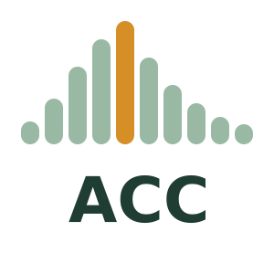

Animal Chromosome Counts
We compile chromosome counts for animals. This release has 18,347 species.
speciesfamiliesphyla
Meet a few species
Click one to see its counts and how it compares.
Photo credits
Where animal chromosome counts fall
Pick a group. Any level works, from phylum to genus.
Try
Group
More options
Compare with
Show the numbers behind the chart
Browse species
Search by species, a former name, class, order or family. Filter by order, family or count, and click a column name to sort.
Cite
Cite the paper. For the data, add the Zenodo record.